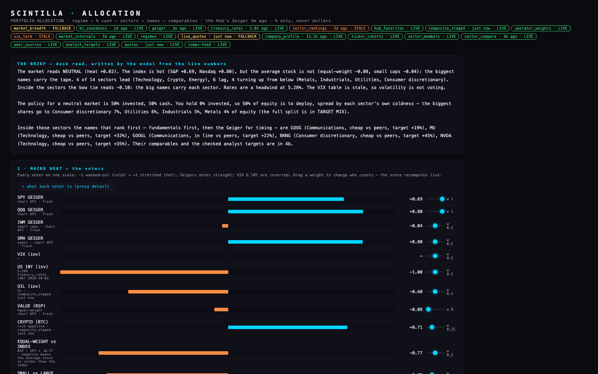
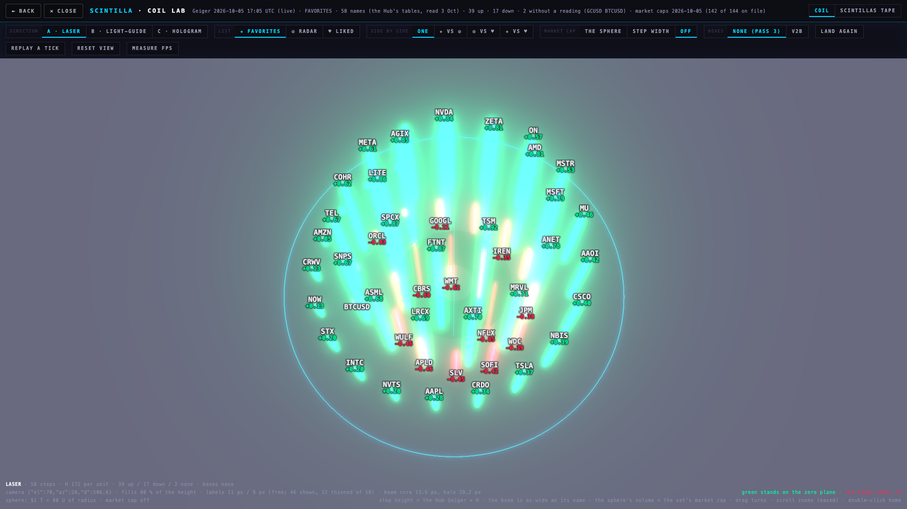

Monday review · 5 Oct · 14:00 · evening update 15:48 · night 20:30
E1CBRS: the chart was right, the lens was wrong — fixed LIVE 15:48
What you saw: the board said +38%, the chart said +9%. The chart was right (the live price against Friday's confirmed close, 166.43). The +38% could not be reproduced anywhere today — if it shows again, a timed picture lets us trace it.
What was actually wrong: the context lens drew its candles into a window fixed at about 30 px tall whatever the move, so a +9% day read as a flat sliver.
The four rules now in the chart (Station pane and the Hub's embeds, every range):
- Lens: frames its own window from its own candles, re-fitted on every refresh; 6 px per 1% the window spans; never taller than 30% of the oval.
- Oscillators: RSI and Williams keep their 0–100 numbers; the pane always holds the 30/70 bands and stretches only as far as the traces go — an extreme reads as an extreme, never a line pinned at the top.
- Price pane: fits the visible bars and clouds plus the margins; the window is never widened to shrink a move.
- Labels: the Geiger chip, the lens and the cloud names never sit on the price trace (checked by the harness on every picture).


Your call (E9-1): on wide-range windows (CBRS 1h, SNDK) the lens stands taller than the 27 Sep "quite a bit smaller" oval. Recommendation: keep — the height is the data; one dial changes it.
E2The two tapes, on the chart area only LIVE 15:48
LIKED above FAVORITES at the top of the chart area — never over the X/YouTube column. Ticker · price · % · the four-rung Geiger mark, a flash on a tick, 45 px/s, the pointer holds a tape still, a tap opens the chart in a slot. LIKED = your Hub likes minus the Station favorites (85 and 63 today, none twice). The charts keep 76% of the width; they give up exactly 46 px of height. Switch: tapes · on/off in the top strip's ⋯ (on by default).


Seen but left alone: after a tap, the chart's header shows the ticker without its price in the hidden browser — the same happens when a symbol is typed into a slot, so it predates this; worth a look on your screen.
E3Your allocation tool — strengthened in place, live on the ALLOCATION tab LIVE 15:30 YOUR 14:15 ADDITIONS LIVE 15:58
Same look, same sections, same 41 dials. Seven sources rewired, four of which were stale or fallback this morning: the Geiger (fresh every cycle), prices, sectors (each SPDR fund's own Geiger + the equal-weight twin), peers (business-first, outliers out), checked analyst targets, soundness. The July ladder (100/80/50/30/15) replaces the straight line; SECTOR COMPARE, SECTOR BOW TIE and MARKET BOW TIE vote with their own dials. Still stale and saying so: VIX term, market breadth (no table yet), sector rankings (3 d).
What it says tonight: NEUTRAL, heat +0.02 — the index is hot, the average stock is not; policy 50% invested; biggest shares to Consumer discretionary, Utilities, Industrials, Metals; names first by fundamentals then Geiger: GOOG, MU, GOOGL, BKNG, NVDA.

Live since 15:58 (PA4): the A/D line and concentration as voters (today −0.21 and −0.85: the line fell 435 over 20 sessions across 315 names; the ten largest names carried 66% of the set's move), VIX now live (+0.60), the methodology dial (SPDR / sector compare / market bow tie / the tree's close tier), ADD TO COMPS as a short list in the approved cards, the tree as an input, the "needs the live Hub vs fundamentals only" list (8 need the Hub, 7 fundamentals only), and every section folded to one screen with a sticky bar — the INPUTS drawer opens over the page. The short list tonight, in the cards: AME, PH, EMR, ADP, NOC, TT, RTX, TDG, BKNG, MCD, LOW, TSLA, GOOG, GOOGL, DIS — KEEP / DROP is yours; nothing pressed yet. PA4 — the first screen, the dial, the cards (45 pictures) → Three technical calls taken for you (say if not): ladder stays; the three new voters count; an ADD tag needs two measured readings.
E4X follows → YouTube: 29 channels now ride with our feed; WOLF Trading's live shows COLLECTOR LIVE 15:45 A PASTE
Your full X follow list is not stored anywhere we can read, so the bridge used the 126 accounts of your X "Trading" list: 30 matched a YouTube channel (21 sure, 9 likely) = 29 channels, 25 new to the feed. The collector now adds them on every pass (no subscribing needed) and, every 20 minutes, opens each channel's public live page and files a stream it finds straight into the feed; the Station shows on-air streams first. WOLF Trading: channel found, on air at every check this afternoon (about 345 watching) — it was in neither list, so nothing collected it.
- Needs you (E9-7): a paste of your X follow list (or Grok Bot's list) as a text file, one handle per line — it settles the 47 look-alikes in one run.
- X Spaces: the lookups need a paid X developer key we do not hold; hosts post the Space link in their posts (52 in our stored feed) — the X collector itself has been stopped since 25 Sep (E8).
- None of the six YouTube accounts refreshes its subscriptions (sign-ins expired); the bridge does not need them.
16:36 — the on-air check, fixed (v9 live): the first pass read every channel but saw nobody on air while WOLF was live — its markers were too loose (a stream still to come also says "live"; a live page's side column shows other channels' badges). The check now reads the player's own flag, asks the channel's Live tab when the page cannot be read, and writes one diagnostic line per channel. Probed from the data centre at 16:36: no wall, no consent page — WOLF had just gone off air (his next stream shows as upcoming, as it should); WOLF's live show itself was already in the feed through the channel's own list, so the Station carried it. The first proof of a catch "before the list knows" comes with the next live stream.
The bridge table (handle → channel, how found) →E5The backlog sweep: 35 lines, 18 done 7 LINES ARE YOURS
Done on branches (not live until you say): prediction markets with history and a resolution log; rating changes from the current feed; SENTIMENT from the daily table; CAPITAL's cash-after-spending line; previous-close hover; fund facts on a fund's FUNDAMENTALS; 15 captions in plain words; the comps rule (own-business peers first); Station axis drags. Done on the back end: the night watchman on its own hourly machine; the job answers now recorded truthfully (Q2b D); phone alarms on since 11:34 ("Scintilla: a job is late or failing"). Closed with a reason: 10. Not done: 9 captions (7 live in ESTIMATES, which the analysts rebuild).
The table and the 12 before/after pictures →E6The forgotten backlog, and the ledgers put back in line LINEAR TRUE 15:40
97 items found across the ledger, receipts, Linear, Obsidian and the direction files: 24 already done but never ticked, 15 dead, 58 pending (24 yours, 26 the coordinator's, 8 with a lane); 35 of the 58 had dropped out of every list. Oldest forgotten: database access rules on 25 tables (17 June); checking the Geiger's weights against what prices did next (17 June, 38,000 rows stored, never run); YouTube profiles for soundscapes and golf (21 Sep). Eleven documents claim to be the master plan — the real ledger was one private file.
Fixed tonight: Linear now tells the truth — 28 issues updated with evidence, 47 created (20 titled [ALAN'S HANDS], 22 [COORDINATOR], 3 [LANE]); the 13 Obsidian topic notes carry a dated "since 23 Sep" section; the Deliverables page has every hosted link. Notion cards: still the coordinator's.
The 97, sortable → Linear →E7Grok Bot: read, judged — sending needs your click START TRIAL
Read (no screen taken): its last three messages. It built a sound pipeline — split an article or transcript where the topic changes, fix the caption punctuation first, keep a timestamp per chunk, score each chunk with FinBERT — and it is honest about the misses ("not a sell" read as bearish, a clear Micron beat read neutral, ads scored like market talk, speech leans bearish). It scored 8 of 12 of our news articles and three videos (Verified Investing bearish, Rey Jay mildly bearish, Ricky Gutierrez neutral).
Verdict: doing well as a researcher, not yet useful as a feed — everything was "scored in memory and thrown away"; nothing has reached us. The next message to it is the intake/outtake: we post the day's articles and transcripts as JSON; it returns one JSON per item (chunks with timestamps, a score per chunk, an overall lean); we store it and show the lean on the rows. The message box is behind "Start a Grok Bot trial to send messages" — that button is yours. Its earlier messages (the X-accounts-with-channels study) are above the fold and cannot be scrolled without taking the screen.
E8Offload: the first Kimi job, and the widths pass tonight KIMI DONE 15:43 19:30 · 20:30
Kimi (its subscription, no API): rehearsed the stopped X collector's code offline — the parsing core is healthy (10 of 10 tests, re-run by the coordinator); restoring it needs three fixes (re-point its runtime folder, pin its two packages, re-create its settings file) and one thing only you can do: the one-time X sign-in in its own browser profile — on the iMac, where it ran. The X collector has been stopped since 25 Sep; until it runs, every SOCIAL tab is stale and Spaces links are not seen.
Tonight, hands-off: 19:30 the seven chart widths nothing refreshes (2 min … 12 months) for the 29 Sep names — backed up first this time, then refreshed, then the undo proved on one name; 20:30 SK hynix (SKHY) admission with the checklist at every step. The night watchman's first real run follows.
Also closed: Massive's retiring financials route (9 Oct) is used by nothing — no code, no job, no database function reads it.
16:37 — two more lanes from E11's traps: the nightly Geiger history frozen for 364 names since 24 Aug (find the writer, make it honest) · the intraday bars' clock sliding an hour in winter (a 12h bar runs into the next morning on 372 names — rule, fix, blast radius).
E10🚨 Database access: 82 tables without rules — six fixes staged, your word needed RED · YOURS
The June-17 item, re-counted today: tables without access rules went from 25 to 82. 86 tables (and 7 views) can be written with the public key that sits inside the Hub page; 127 tables are readable by anyone and read by no page. No table holding a key is open.
- Risk 1 — the database will send a web request for anyone: the job relay function takes the address, headers and body from the caller and runs with the owner's rights; the public key may call it.
- Risk 2 — a side door into the universe: the tickers table is protected, but three views onto it accept writes from the public key and pass them through — anyone could move, add or remove a name.
- Risk 3 — 74 tables with no rules and full public write, including the daily Geiger history, the market calendar, sector rankings, the pipeline queues — and the Urth client and supplier details (names, addresses, map coordinates, emails), readable as well as writable.
Staged, not applied (each beside its undo): 01 close the relay · 02 the three views read-only · 03 rules on 63 Scintilla tables keeping every read · 04 rules on the 11 Urth tables · 05 private working notes · 06 stop the public key triggering 10 maintenance functions. For 01, 02, 03, 05, 06 nothing in the Hub, Station or provider code was found that would break; nothing has been run, not even dry. Recommendation: say "apply 01, 02, 04" and they go in tonight (one undo file each); 03/05/06 after a dry run on a branch database. Seven tables the pages save into with the public key (watch-lists, layouts, video positions …) need a page change first; the inbox storage bucket is open to upload and delete.
The full table (340 rows) and the eight cards → Linear SCI-81 →E11Does the Geiger lead price? The June-17 question, answered on 281,265 readings READ
The answer, measured: on its own, over 1 to 20 sessions, the Geiger does not lead price. The hottest tenth of names on an evening and the coldest tenth did the same next: 50.3% vs 50.0% rose the next session; +0.21% vs +0.32% over five; +0.61% vs +0.99% over twenty. An extreme reading does not come before a bigger move (0.84× the name's usual day vs 0.82×). The slow rungs (1d 3d 1w — 41% of the weight) lean the right way; the fast rungs (3h to 12h — 59% of the weight) lean slightly the wrong way over 1–5 sessions; today's weights vs equal weights: no measurable difference. Most promising and still unproven: weights tuned on year one, judged on year two, +0.048 at twenty sessions. Technology and Healthcare are the only sectors where hot beat cold.
Read it the right way: this tests the Geiger alone, in a bull period (SPY +32% with one 19% fall), on stocks and funds, with no judgement on top — "fundamentals tell what to buy, the Geiger tells when" was not tested as a pair, and that is where you said the edge lives. The June "38,000 rows" turned out to be an older five-part score on 12 names; the real test rebuilt every reading with the publisher's own rung maths and matched the live Geiger to within a millionth.
Two things it found on the way (both now have lanes): the nightly Geiger history has carried the 24 Aug value for 364 names ever since — only 7 evenings are usable; and the intraday bars' clock slides an hour in winter, so a "12h" bar runs into the next morning on 372 names — that alone made the 12h rung look like a strong signal until the bars were put in the right session.
The tables, the six pictures, the caveats →E12Tonight's honesty fixes — what was quietly old, and is now live APPLIED 17:00–20:24
- The intraday bars' clock (2h to 12h): Massive steps long requests in fixed UTC, so every bar after a clock change sat an hour off — 213 names wrong today. Fixed on the bar service at 16:58; by 18:31 a random sample of 14 of those names was 14 of 14 on the New York clock.
- The nightly Geiger history: for 364 names it had re-stamped the 24 Aug reading every night. Now every row says when it was really computed; tonight's first honest write stored all 590 served names from the live Geiger (20:21), and a small nightly machine does it every evening from now on.
- The crypto Geiger: its heaviest vote (daily) came from bars frozen on 14 Aug — every coin read the maximum. Now each coin reads its own live bars; a bar size that has gone stale stops voting and is named. BTC 0.86 → 0.76, ETH 0.88 → 0.71, LINK 0.61 → 0.38.
- The news mood: the job read all 594,917 headlines every run and timed out; it now reads the newest through an index (2.8 s → 0.2 s) and is back-filling the half-million it never scored since 23 Sep.
- Also: the 2028 market calendar is in (2027 already was); the crypto quote job's timeout raised so finished runs stop counting as failures.
- Stopped on purpose: the seven-widths refresh (2 min … 12 months, stale since August) — measured first, it would have shortened stored history, so it never wrote. Everything is backed up (2.8 GB); an append-only version is being built now.
E9Your decisions tonight — one line each, with the recommendation
- 1 · Lens height on wide-range windows (CBRS 1h, SNDK): keep as built (recommended) or cap it.
- 2 · Comps rule (own-business peers first; MU's centre falls from $4,393 to $2,122, still about double because WDC/STX trade at 21–25× and MU at 6×): accept (recommended).
- 3 · Oil chart: the −$4.70 step on 23 Sep is the contract roll — keep true prices with a roll mark (recommended) or back-adjust.
- 4 · The night watchman will read RED until settled: 15 joined-ticker names (BKR, BNY, CB, COHR, ELV, ES …) serve history older than their recorded start — allow the joins (recommended) or trim.
- 5 · Previous-close hover (provisional / revised): keep (recommended).
- 6 · Phone alarms are on since 11:34: keep (recommended).
- 7 · A paste: your X follow list or Grok Bot's list, one handle per line — settles 47 look-alike channels.
- 8 · Your hands: IB Gateway has been down since Sunday 04:39 (today's put/call series is empty) — restart it, log in, switch on "Auto restart"; the Gmail worker sign-in (the command on your Desktop); the X Bridge reload.
- 9 · Grok Bot: the Start Trial button, if you want us to message it.
- 0 · 🚨 Database access (E10): "apply 01, 02, 04" closes the relay, the side door and the Urth details tonight (recommended); the rest after a dry run.
- 11 · The sector ranking and the "peers" sentence still read the 24 Aug copy for stocks (the ranking on the allocation tool and four Station pages; the READ text's peers line). The fix is staged and tested: on today's live readings Metals & Mining goes #1 → #7, Technology #11 → #3. Apply (recommended — it is old data shown as today's) or hold.
- 12 · 3M / 6M / 12M candles: today a quarter starts on whatever month a name was first pulled. Rebuild them as calendar quarters and years (recommended — it changes what those charts show).
- 13 · Deletes, each with counts on its page: the August crypto backfill left-overs (414,462 rows, nothing reads them — yes, after an export); the 9,352-row old alert log (keep for now — seven feeds have no other down-record).
- 14 · Looks: the oscillator line matched to the Lab (three small gaps closed, on a branch) and the ALL map colouring twice as fast (on a branch, it touches the Hub page).
- 10 · Taken as technical, say if not: the allocation ladder stays; the three new voters count; an ADD tag needs two measured readings; the bridge's 29 channels are in (undo = one row).
1Station: your tweaks are live LIVE 13:55 + TAPES · ANCHORS · LIVE TILES 15:48
YouTube bar by use: NEXT · GRID · + WATCH LATER · ↻ · ⛶, the channel switch and the filters behind one ⋯. X refreshes by itself every 60 s (there was no timer before — only the ↻ button) and reads as a page up: the newest posts come to the top and the post you're reading stays if it fits; 30 / 90 s are in the X bar's ⋯. Icons instead of words. The X crop fix is in the bridge (0.7.23).
Your one keystroke, once per browser that feeds X: open chrome://extensions, press ↻ on "X Bridge", then click the x.com source tab and press ⌥⇧S. Until then the health page says "needs ↻ + ⌥⇧S" and the X capture keeps the old crop.
Pictures: the bar at three widths, the X crop before/after, the two tapes proposal →2Portfolio allocation — back to your original STRENGTHENED · LIVE 15:30 PA4 · YOUR 14:15 ADDITIONS LIVE 15:58
You were right: the chain page was a data dump and not your prototype. The ALLOCATION tab now opens your original tool (allocation.scintillahub.ai — THE BRIEF → MACRO HEAT voters → your 41 dials → TARGET MIX → THE MOVES → MOVE OPTIONS → COMPARABLES). Its header shows several sources stale or on fallback today (rates 9 h, sector rankings 3 days, profiles stale, peers fallback). The lane running now rewires each to what we have (the live Geiger, the sector compare and bow tie as voters, the new comps and the cleaned analyst targets) in that page, same look, same flow — and brings the brief back to "regime → % cash → sectors → names".
Open your tool (what it says right now) →3Off-Hub coverage: sound APPLIED 13:20
The 52 "not yet" industries were never short of names — the close tier simply skipped every foreign listing (the job asked for common stock only). 380 foreign names (ADRs) are now in the close tier, both scout machines run them and fired on schedule. Sectors sound: 6 → 11 of 11; industries 55 → 71 sound, 0 thin; your cohorts stay 6 of 18 — their problem is disagreement among members, not count, and three of them hold crypto, futures and yields that stock files can't read. HSBC, SHEL, TM, NVS, BHP, UL, MUFG now have seven-rung readings.
The before/after tables and the list by sector →4The tree, rebuilt to your standard YOUR OK
Status: built and on a preview page — not the live TREE tab yet. Every part is the Hub's own CSS, copied with a test that fails if it drifts; the podium is the laser coil. Tickers printed at home: 108 of 613 → 614 of 614. Black share 81% → 53% — the 25% target can't be met with the Hub's own cell (its type sits on black by design); the canvas is 75% covered.


Decisions: accept "canvas ≥ 75% covered" instead of "25% black" (I recommend yes); OUTLINE as the phone view only (yes); two sets side by side as a button later.
Open the rebuilt tree itself (preview — the live TREE tab is unchanged until you say so) →All the pictures: a sector open, a cohort as a 3D bow tie with its sphere, the walk →5The coil, pass 4 LOOK
Your four points, done: no rectangles behind the labels and no wire outlines; the beam is wider than its name (core 13.6 px vs 11 px type at home); type 11 / 16 / 8 px at home / in / out; the zoom eases (no snap: the camera fit runs once, not on every wheel tick; 60 fps; a label changes its mind 0.3 times a second); the red as bright as the green. The separation stays.

6Outside critique of our code and processes YOUR OK TO SHIP THE FIX
Tools over the three repos (ESLint, type checks, dead-code and dependency checkers, Semgrep, Lighthouse): the worst five — the Hub board shifts its layout badly while loading and weighs 5.4 MB before any data; two promise chains in the stream with no error catch; a developer harness calling a function that doesn't exist; thirteen shared contract files living in the wrong folder; and one more Berkshire-class bug (the history cutter asked Massive with our spelling) — found by hand, fixed.
The fix for the Berkshire class: one identity record per security (canonical name, every provider's spelling, FIGI ready for a permanent ID) that every service must go through, with a test that fails the build when any service spells a ticker on its own, and the universe file can never again be written without its spellings. Built and tested; to ship in the next back-end deploy.
The findings table and the process verdicts with their references →7Open-source models, sentiment, Grok Bot VERDICTS
Bake-off on our own data (300 X posts, 100 news rows, 58 articles, 20 transcripts, hand-labelled): for X posts and news, ModernFinBERT (68% / 71%) with Qwen2.5-7B on the Mac as a second opinion (73%); FinBERT — the one Grok Bot is testing — scores 55%, below guessing "bullish" every time (56%); our current word list reads nothing on 148 of 300 posts. YouTube: free captions work (26 of 26); sentiment from transcripts is only a "try" (the best method missed all three bearish videos). Also found: 12 of 100 news rows are filed under the wrong ticker. Everything runs free on the MacBook.
Grok Bot: a human-only channel today — its links can open a thread but can't carry a prompt or a file; no command line, no watched folder; its work lives on its cloud computer and this Mac holds only a copy of the chat text (the FinBERT talk, no captured posts). Proposed: you paste one message once, it sets up a routine with a webhook, we send it jobs from Fly and it returns files on a Git branch. The X feed: our own collector died because it lost one installed dependency on 27 Sep (the folder vanished a day later); its code survives and a rehearsal passed 118 of 118 — restore it headless in its own Chrome profile (recommended) rather than depend on Grok Bot.
The adopt table, the bake-off, the Grok Bot channel →8Also today
- The freeze at the open: fixed 11:16, cause removed 11:30 (Saturday's part 8 → "a little wrong rather than a little old" is live on the back end).
- Saturday's fills applied: dossiers, holdings, statements for 69 companies (69 of 69), MOG.A; job timers de-clashed; alarms on.
- Running: the backlog sweep, the forgotten-backlog review (Notion, Obsidian, Linear), the allocation on your tool. SKHY self-launches 20:30 ET.
- What-lives-where (462) waits for the tree and the off-Hub numbers above — it will be re-cut with them.
Page specs
Evening sources: CH1 station/ch1-dynamic-anchors-20261005 @c044aa5; S14 station/s14-tapes-20261005 @2c06057; Y2 hub/y2-youtube-bridge-20261005 @a7d69a1 + station/y2-youtube-live-20261005 @8f2005a (yt-rss-sweep v8, yt-config v7, app_config yt_bridge_channels; rollback ROLLBACK-y2-youtube-bridge-20261005.txt); PA3 scintilla-allocation main @f180bb3 (rollback ROLLBACK-allocation-pa3-20261005.txt); K1 hub/k1-backlog-20261005 @57a3f31 + provider @5b4bf19; R1 hub/r1-backlog-review-20261005 @e2ba57c; L1 receipts/RECEIPT-20261005-L1-ledgers.json; F1 loaders fmp-fundamentals v13, fmp-analyst v12, fmp-events v13, fmp-backfill v15, dossier-facts v1, cron 293/294 (rollback ROLLBACK-f1-functions-20261005.txt); Kimi executor/kimi-runs/xfeed-restore-rehearsal-20261005c-*; Station rollback ROLLBACK-station-s14-ch1-y2-20261005.txt. Sources (14:00): S12/S13 station/s12-controls-20261005 @187fec9 (live b9feb36); PA3 brief BRIEF-20261005-PA3-ALLOCATION-ON-THE-ORIGINAL; O1 provider @77d368c, hub @087a73c, rollback ROLLBACK-o1-offhub-20261005.txt; T13 hub/t13-tree-standard-20261005 @ac86899; V4 hub/v2-coil-lab-20261003 @253b610; Q3 provider @f04c9b7, hub @78b423e; M1 hub/m1-models-20261005 @0ed0575. Report pages only on the Hub; the ALLOCATION tab target is the one Hub change (release 101fdd1).